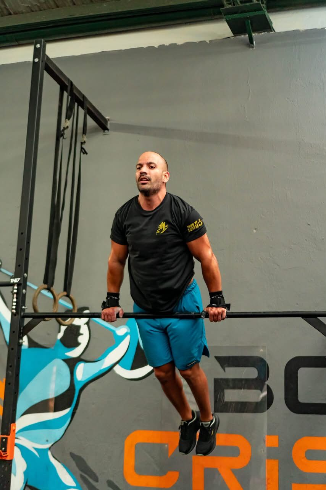
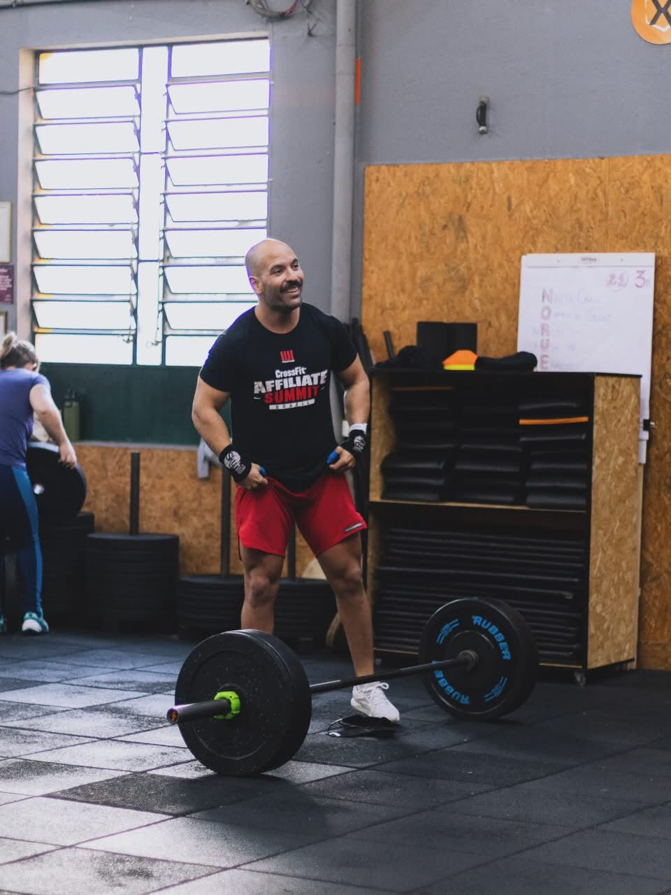

Treino individualizado
Planejamento alinhado aos seus objetivos e necessidades.
PERSONAL TRAINING PRESENCIAL
Acompanhamento individualizado para você treinar com planejamento, técnica, intensidade e evolução — com orientação profissional em cada sessão.

O acompanhamento
Um acompanhamento individualizado, presencial e direcionado para seus objetivos. O treinamento é planejado para suas necessidades, com correções técnicas, ajustes ao longo do processo e atenção à sua evolução.
Vamos conversar ↗O que está incluso
Cada detalhe do acompanhamento tem uma função no seu processo de treino.
Planejamento alinhado aos seus objetivos e necessidades.
Treinos presenciais com frequência definida e acompanhamento próximo.
Em meses com cinco semanas, não há cobrança adicional por aulas extras.
Organização e progressão do treinamento ao longo do período.
Ajustes de cargas, volume e intensidade conforme a necessidade.
Correção e orientação da execução dos exercícios durante as sessões.
Observação da evolução para orientar os próximos ajustes.
Treinos adaptados às suas necessidades e ao seu momento.
Escolha seu acompanhamento
Consulte diretamente com o Coach Max os valores e as condições de cada plano.
Para construir consistência com acompanhamento ao longo de um ciclo maior.
Um período para desenvolver sua rotina e ajustar o treino com orientação.
Conheça o acompanhamento e comece com um plano direcionado às suas necessidades.
Valores, disponibilidade e condições de contratação são informados diretamente pelo Coach Max.

Nosso objetivo
Nosso objetivo é construir um treinamento com propósito, planejamento e acompanhamento profissional. Cada etapa considera suas necessidades, busca aprimorar sua técnica e acompanha sua evolução ao longo do processo.
Com orientação individualizada e ajustes contínuos, você terá um direcionamento mais claro para buscar seus objetivos.
O próximo passo começa aqui
Entre em contato para entender os planos, consultar os valores e descobrir como funciona o acompanhamento presencial.
Chamar no WhatsApp ↗